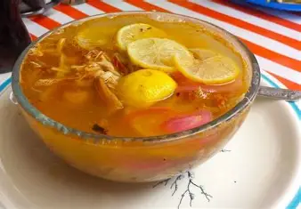

Descripción
La Sopa de Lima es un platillo tradicional de Yucatán, hecho a base de caldo de pollo, jugo de lima, tiras de tortilla frita, verduras y pollo deshebrado. Su sabor cítrico y aromático la hace única y deliciosa.
Es ideal como entrada en comidas familiares o para disfrutar en cualquier época del año.
Ingredientes
| Ingrediente | Cantidad |
|---|---|
| Pollo con hueso | 1 kg |
| Agua | 2 litros |
| Cebolla | 1 pieza |
| Ajo | 2 dientes |
| Pimiento morrón | 1 pieza |
| Jugo de lima | 1/2 taza |
| Tortillas de maíz | 4 piezas (para freír en tiras) |
| Tomate | 2 piezas |
| Zanahoria | 1 pieza |
| Apio | 1 rama |
| Sal y pimienta | Al gusto |
| Aceite vegetal | Para freír las tortillas |
Preparación paso a paso
- Hacer el caldo: Coloca el pollo, cebolla, ajo, zanahoria, apio y pimiento en una olla con 2 litros de agua. Cocina a fuego medio hasta que el pollo esté tierno (aprox. 40 minutos).
- Retirar el pollo: Saca el pollo del caldo, deshébralo y reserva. Cuela el caldo para eliminar verduras y restos grandes.
- Preparar las tiras de tortilla: Corta las tortillas en tiras y fríelas en aceite caliente hasta que queden crujientes. Reserva sobre papel absorbente.
- Agregar tomate al caldo: Licúa o corta finamente el tomate y agrégalo al caldo. Cocina 5-10 minutos para darle color y sabor.
- Incorporar el pollo deshebrado: Añade el pollo al caldo y mezcla bien.
- Condimentar: Salpimenta al gusto y agrega el jugo de lima poco a poco, probando hasta obtener el sabor cítrico deseado.
- Servir: Sirve la sopa caliente en platos hondos, colocando las tiras de tortilla frita en cada porción antes de servir.
- Consejo final: Puedes acompañar con rodajas de lima adicional y unas hojas de cilantro fresco si deseas.
Consejos
Para un sabor más auténtico, utiliza limas frescas de Yucatán. Las tiras de tortilla deben agregarse al momento de servir para mantener su textura crujiente.